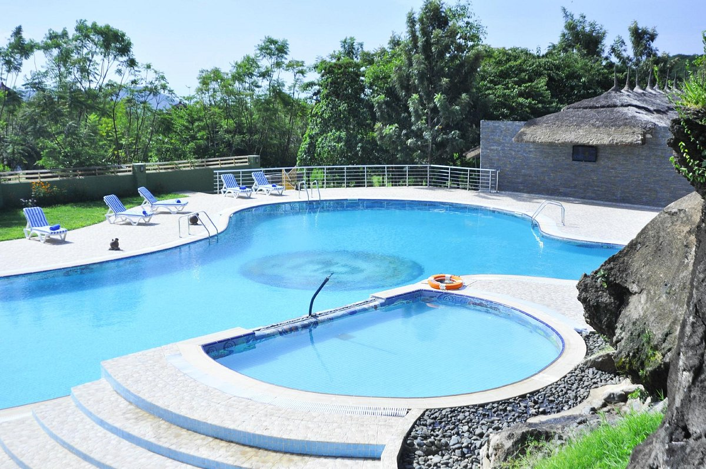
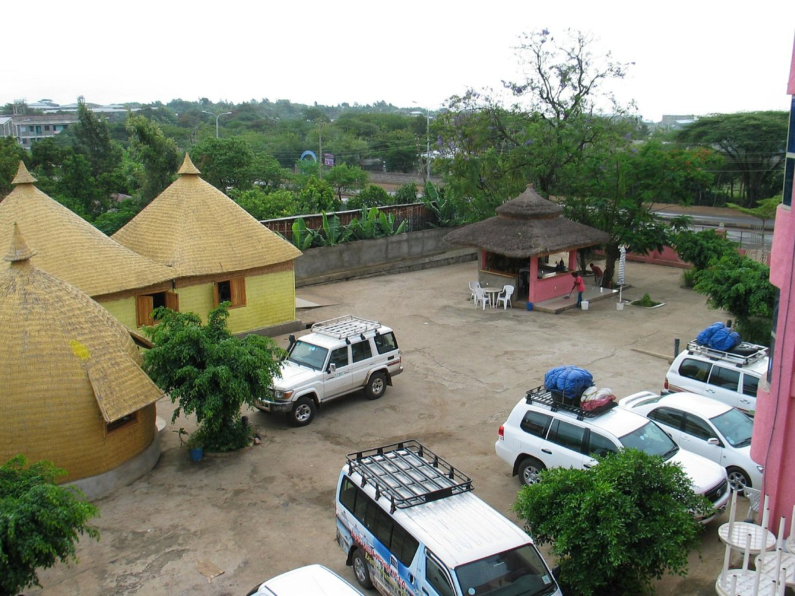

Haile Resort - Arba Minch is a 110 room four-star resort located at a grand view overlooking the twin lakes of Abaya and Chamo along the beautiful evergreen vegetation, chain of mountains that form the most beautiful pattern. Haile Arba Minch is an all inclusive concept that provides five star services to its guests. Our new resort features food and beverage outlets on view points; complete healt
Haile Resort
Emerland Resort
With a stay at Emerald Resort Arbaminch in Arba Minch, you'll be 5.7 mi (9.1 km) from Arba Minch Hospital and 7.4 mi (12 km) from Arba Minch University. The front desk is staffed during limited hours. A roundtrip airport shuttle is complimentary (available 24 hours).
Emerland Resort
LOGES
Dorze Loge
Welcome to the site of Dorze Lodge. In the fantastic mountains of the Dorze people close to Arba Minch, we have recently renovated our spectacular lodge. If you stay in Dorze Lodge, then you stay very close to nature and to the local culture. This is the place to come to yourself or in touch with the friendly local people. The lodge is built in a rather rough (and beautiful) environment, and staffed by local people. We have a lot of activities you can do, like beautiful hikes and trekking’s (by yourself or guided). Other things you can do is: visit a local, visit the local school, join the local community in the evening at a campfire with music and dance, or go horseback riding. And we can offer you all kind of tours to different interesting attractions, close bye or up to the Omo valley. Or just lay in a hammock and enjoy the serenity. It’s amazing. We make sure that you will have an unforgettable time. You are very welcome.
Read less
Dorze loge
Paradize Loge

paradise Lodge Arbaminch was opened in 2008 as a means to transform the hospitality industry in Africa by providing guests with unparalleled service and an authentic experience while preserving the natural environment and strengthening the local culture. With contributions from 56 southern nations of Ethiopia and thousands of delighted guests, we have been serving this mission even as we expand our services and provide new experiences to our customers.
Paradise loge
Hotels
Tourist Hotel
Best restaurant and recreation place
As a tour guide usually I prefer arbaminch tourist Hotel. it's really good place and my clients easily get what they prefer and opens the door for them to taste delicious cultural foods. I really recommend arbaminch tourist hotel for anyone.
Tourist Hotel
Forty Spring Hotel
The hotel consists of a bedroom block, ground plus two floors in modern style. There are 20 bedrooms with double bed, table and chair for reading or working, shelves for clothes, ensuite shower with hot and cold water, and toilet. There are two apartments - bedroom, sitting room and kitchenette. There is a pleasant outside bar, coffee place, and seating area. The reception, lounge and restaurant are done in traditional Ethiopian style. There is free WiFi internet access
Forty spring Hotel
Ezana hotel

Comfortable, lovely garden, but needs mosquito repellent in rooms.
This hotel has a lovely garden filled with birds and huge trees providing shade. The rooms are small, but we had two double beds, a medium sized refrigerator, a table with two chairs, wardrobe and little seating area outside our door. There was a ceiling fan as well, which was really. nice. Hot water worked and so did the electricity all day and night. The wi-fi was on and off, like all over Ethiopia. Breakfast was nice with eggs to order and toast. The only problem was the mosquitoes. Our room was filled with them and no repellent was provided. The provided mosquito nets, however, were a big help
.jpg "EMERLAND RESORT ARBA MINCH ETHIOPIA") With a stay at Emerald Resort Arbaminch in Arba Minch, you'll be 5.7 mi (9.1 km) from Arba Minch Hospital and 7.4 mi (12 km) from Arba Minch University. The front desk is staffed during limited hours. A roundtrip airport shuttle is complimentary (available 24 hours).
With a stay at Emerald Resort Arbaminch in Arba Minch, you'll be 5.7 mi (9.1 km) from Arba Minch Hospital and 7.4 mi (12 km) from Arba Minch University. The front desk is staffed during limited hours. A roundtrip airport shuttle is complimentary (available 24 hours).
 Welcome to the site of Dorze Lodge. In the fantastic mountains of the Dorze people close to Arba Minch, we have recently renovated our spectacular lodge. If you stay in Dorze Lodge, then you stay very close to nature and to the local culture. This is the place to come to yourself or in touch with the friendly local people. The lodge is built in a rather rough (and beautiful) environment, and staffed by local people. We have a lot of activities you can do, like beautiful hikes and trekking’s (by yourself or guided). Other things you can do is: visit a local, visit the local school, join the local community in the evening at a campfire with music and dance, or go horseback riding. And we can offer you all kind of tours to different interesting attractions, close bye or up to the Omo valley. Or just lay in a hammock and enjoy the serenity. It’s amazing. We make sure that you will have an unforgettable time. You are very welcome.
Read less
Welcome to the site of Dorze Lodge. In the fantastic mountains of the Dorze people close to Arba Minch, we have recently renovated our spectacular lodge. If you stay in Dorze Lodge, then you stay very close to nature and to the local culture. This is the place to come to yourself or in touch with the friendly local people. The lodge is built in a rather rough (and beautiful) environment, and staffed by local people. We have a lot of activities you can do, like beautiful hikes and trekking’s (by yourself or guided). Other things you can do is: visit a local, visit the local school, join the local community in the evening at a campfire with music and dance, or go horseback riding. And we can offer you all kind of tours to different interesting attractions, close bye or up to the Omo valley. Or just lay in a hammock and enjoy the serenity. It’s amazing. We make sure that you will have an unforgettable time. You are very welcome.
Read less
 Best restaurant and recreation place
As a tour guide usually I prefer arbaminch tourist Hotel. it's really good place and my clients easily get what they prefer and opens the door for them to taste delicious cultural foods. I really recommend arbaminch tourist hotel for anyone.
Best restaurant and recreation place
As a tour guide usually I prefer arbaminch tourist Hotel. it's really good place and my clients easily get what they prefer and opens the door for them to taste delicious cultural foods. I really recommend arbaminch tourist hotel for anyone.
 The hotel consists of a bedroom block, ground plus two floors in modern style. There are 20 bedrooms with double bed, table and chair for reading or working, shelves for clothes, ensuite shower with hot and cold water, and toilet. There are two apartments - bedroom, sitting room and kitchenette. There is a pleasant outside bar, coffee place, and seating area. The reception, lounge and restaurant are done in traditional Ethiopian style. There is free WiFi internet access
The hotel consists of a bedroom block, ground plus two floors in modern style. There are 20 bedrooms with double bed, table and chair for reading or working, shelves for clothes, ensuite shower with hot and cold water, and toilet. There are two apartments - bedroom, sitting room and kitchenette. There is a pleasant outside bar, coffee place, and seating area. The reception, lounge and restaurant are done in traditional Ethiopian style. There is free WiFi internet access